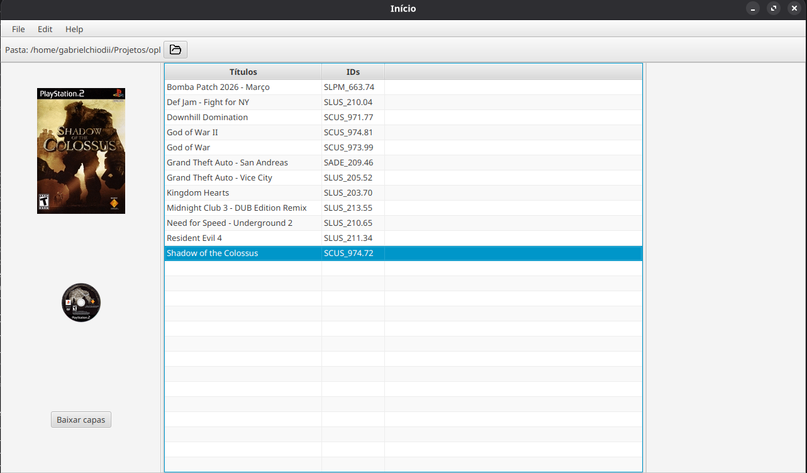
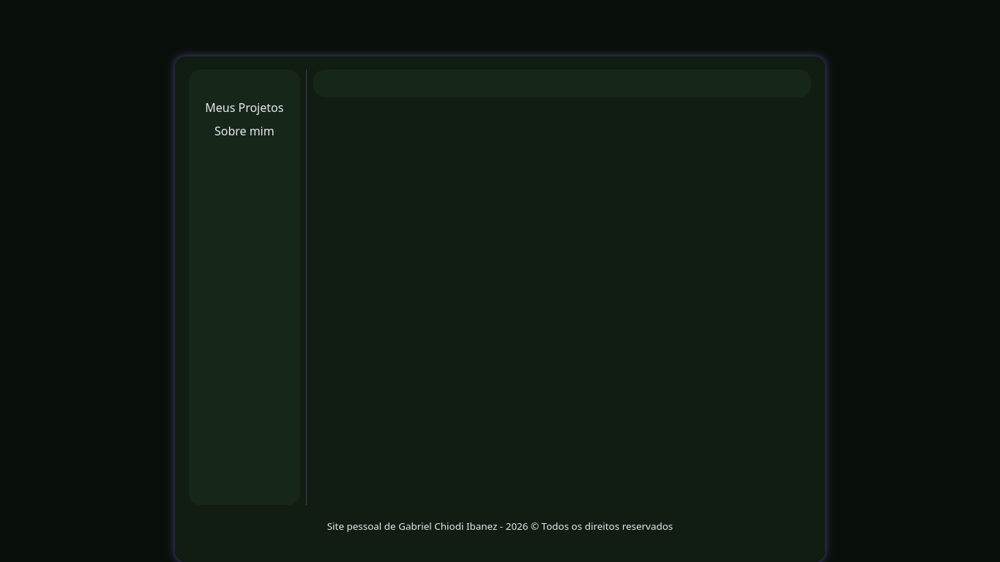

PS2 Pulsar
Apresentação
A ideia de fazer esse gerenciador de games, apps e homebrews para PS2 surgiu da necessidade de utilizar o tão bom e eficiente OPL Manager, no Linux. Você pode estar se perguntando, "Por que não utilizou ferramentas de compatibilidade para softwares de Windows no Linux?". Pois eu tentei utilizar ferramentas como Proton e Wine por meio do software Bottles, porém, ainda assim, não consegui. Foi então que me veio a ideia de unir o útil ao agradável: iniciar e aprofundar os estudos na linguagem Java - o que já iria fazer de qualquer forma - e aproveitar para desenvolver um software multiplataforma (para Linux, Windows, macOS etc.) que funcionasse nativamente no Linux.
O desenvolvimento deste programa foi feito apenas com o estudo do livro Java - Como Programar 10ª edição, e, obviamente, da documentação oficial da Java API e da JavaFX API, sem a utilização de Inteligência Artificial em nenhuma etapa do projeto. Decidi utilizar a API gráfica JavaFX em vez da clássica Swing, pois a conheci no livro mencionado e decidi já aprendê-la também.
A versão inicial que foi publicada no GitHub trata-se de uma prova de conceito, com código desenvolvido sem organização ou engenharia, mas funcionando completamente. O objetivo era iniciar o projeto. Ainda pretendo refatorar, organizar, implementar novas funcionalidades, compilar para execução e fazer uma documentação de uso neste site, mas isso será feito com o tempo.
Esse software nasce com propósitos de estudo, como um Software Livre, de código aberto, sob a licença GPLv3. Ele surge para atender às minhas necessidades de uso, mas o deixarei, de bom grado, livre para quem quiser utiliza-lo.
Novas melhorias de desempenho, aprimoramentos gráficos e adições de funcionalidades serão realizadas conforme o andamento de meus estudos e a aquisição de novos conhecimentos. Portanto, não espere atualizações frequentes. Não que isso não possa acontecer, mas lembre-se: este é um projeto pessoal, desenvolvido sem utilização de IA.
Sobre o projeto
*Transparência: Não foi utilizado I.A em nenhuma etapa deste projeto.
Acesse o link para o site oficial do Projeto: gabrielchiodii.github.io/ps2-pulsar
Características iniciais do PS2 Pulsar:
- Suporte inicial ao OPL;
- Seleção do diretório do OPL;
- Criação dos diretórios padrão do OPL;
- Identificação de jogos nas pastas CD e DVD;
- Obtenção dos IDs dos jogos a partir de arquivos ISO;
- Download de capas frontais e ícones de disco;
Print da tela do PS2 Pulsar

Repositório do projeto: github.com/GabrielChiodiI/PS2-Pulsar
Meu Website Pessoal
Apresentação
Não poderia começar as postagens de projetos no site de outra maneira senão pela postagem do projeto do próprio site. Neste momento, por ser um projeto mais simples, vou versioná-lo de maneira arbitrária. Então, lhes apresento o meu site versão 1.0.
O site surge da necessidade de haver um local para postar projetos, apresentando-os e explicando-os ao público. Cada vez mais utilizo e me interesso por produtos Open Source (código aberto). Também pretendo desenvolver projetos para atender às minhas necessidades e, se estas forem as de mais alguém, ficarei feliz em poder ajudar e, assim, contribuir com a comunidade.
A ideia de fazer um site, além de servir como um portfólio de projetos, surgiu com o objetivo de ter um local para escrever artigos sobre temas variados e assuntos que eu estiver estudando. Outra finalidade é estudar e armazenar meus aprendizados sobre programação, tecnologia e áreas relacionadas à computação, e até mesmo sobre outros interesses, como eletrônica, modificações e qualquer outro tema que venha a me empolgar.
No fim, será um site pessoal à la blogs do início dos anos 2000, com assuntos diversos do meu interesse.
Para construir este site, decidi fazê-lo a mão no editor de textos de terminal Vim, iniciando com HTML e CSS puros, e utilizando o GitHub Pages.
Admito que não me interessava tanto por linguagens de marcação, desenvolvimento Web e design, e sei que não levaria mais de 1 minuto para fazer este site usando Inteligência Artificial. Ainda assim, aproveitei a oportunidade para sair da zona de conforto, estudar mais as tecnologias envolvidas e colocar a mão na massa, uma vez que pretendo publicar no site justamente conteúdos relacionados a estudo, desenvolvimento e aprendizado.
Outro ponto que me levou a estudar mais o tema foi a evolução do JavaScript e das tecnologias para aplicações Web (Webapps), assunto sobre o qual voltarei a falar em outro momento.
Bom, agora que já aprendi a fazer um site minimamente decente, já posso me considerar apto para iniciar o anos 90 (Kkkk).
A medida que o site for crescendo e, a depender das necessidades do projeto, considerarei adquirir um domínio e migrar para um servidor próprio.
Sobre o projeto
*Transparência: Não foi utilizado I.A em nenhuma etapa deste projeto.
Ao pensar no design — fonte, cores, contraste, epaçamentos e bordas arredondadas — me inspirei nas interfaces do Gnome, ambiente de desktop para Linux.
As cores foram ecolhidas com base na bandeira do Brasil, mais especificamente na época do Império, mas, de qualquer forma, continuam sendo as mesmas utlizada hoje.
Características do site na versão 1.0:
- Utiliza somente HTML e CSS;
- Os conteúdos são inseridos diretamente do HTML, sem inserção dinâmica;
- Site otimizado para uso apenas em computadores de mesa e latpops;
Print da tela do site na versão 1.0:

Repositório do projeto: github.com/GabrielChiodiI/GabrielChiodiI.github.io